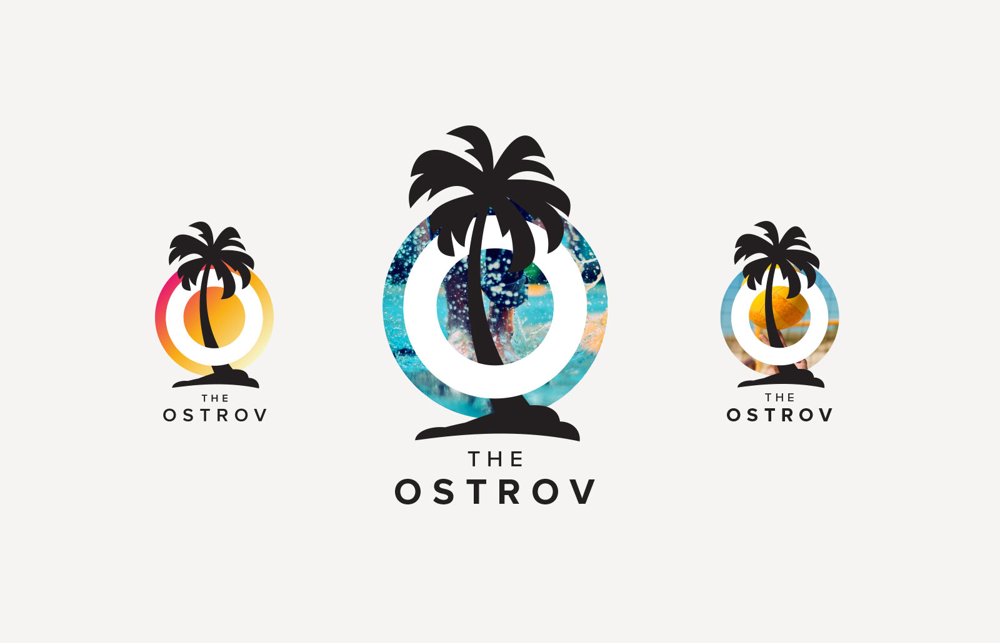
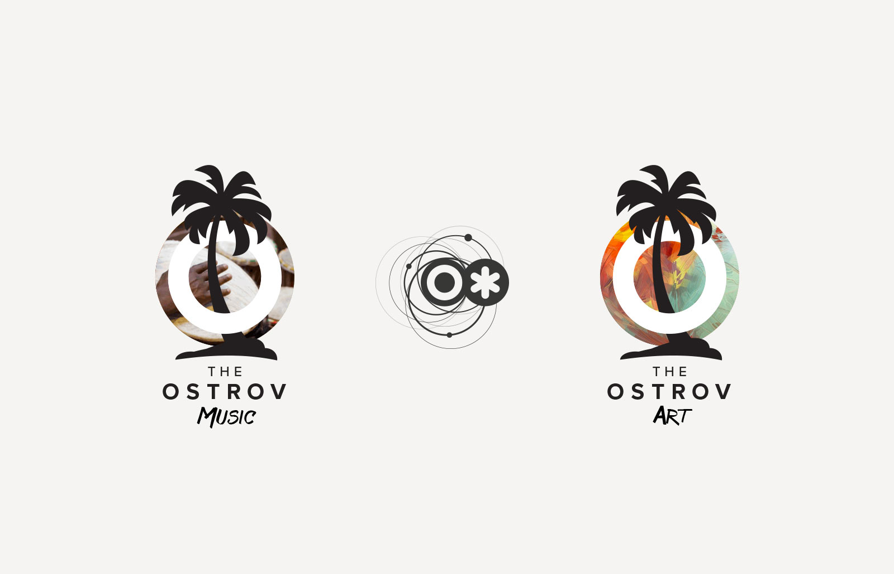
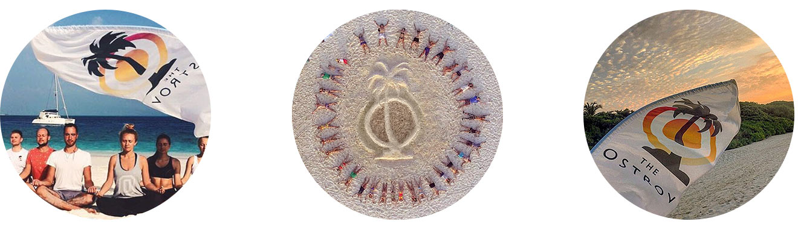
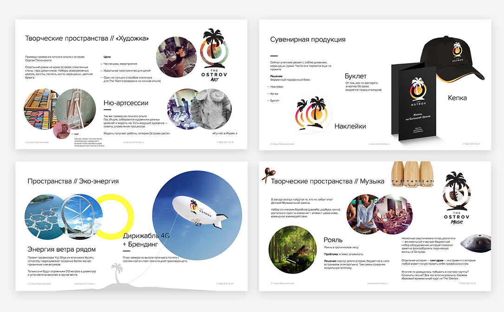
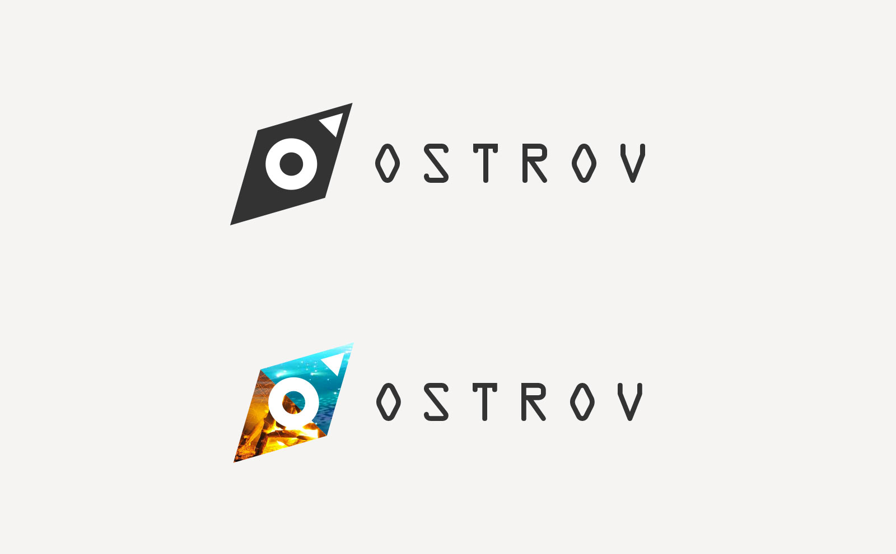
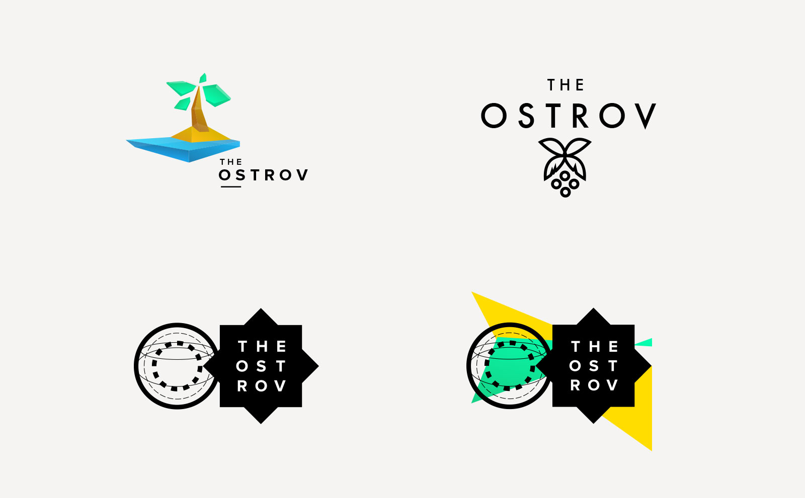
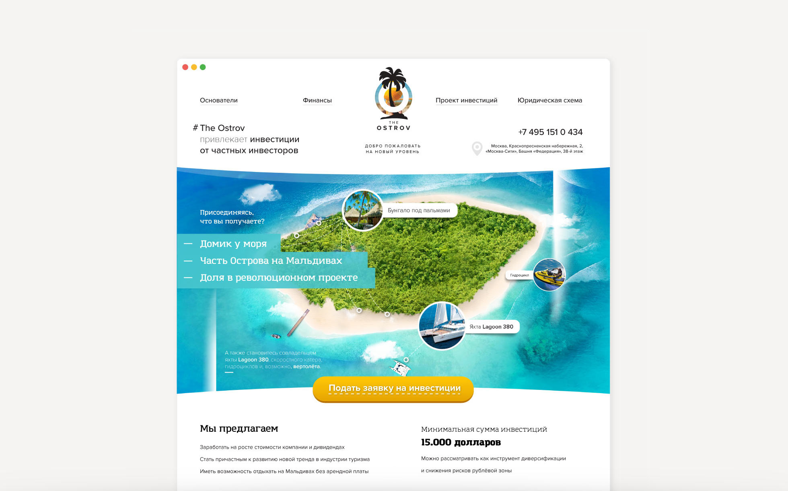
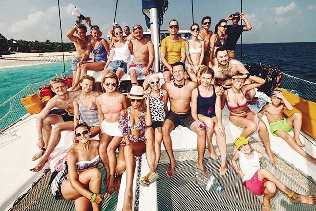

November 14th 2015
#TheOstrov
(‘Ostrov’ means ‘Island’ in Russian)
In the fall of 2015, Dmitry Yurchenko and Ekaterina Inozemtseva ( OJ CEOs) who had become my friends, decided to launch a completely unique project on the Maldives.
‘The Ostrov is one of the elements of OJ — our healthy lifestyle holding company.
Dynamic identity:
Timeframe: 1 week
The result is a series of #TheOstrov logos and the concept of project development
Primary sign

The logo inherited the style of the parent brand OJ.

A sign in the real world
We were not time-bound taking the photos. But there was a mobile detox rule on the Island. All the participants of the project had to hand in their phones on the first day. And, believe me, it was worth it!

But, of course, there was a great team of operators. With their help several videos have been produced. The full-length film was released in March.
Making of
Some slides from the first concept presentation

Going beyond design is my old dream. And finally it came true. The concept of the improvement of The Ostrov is also a kind of a challenge. And I'm certainly proud of the result.

Process
Several ideas of the logo from the "Process", which I proposed. The letter O and the compass needle:

Some more variants

The design of the landing to attract investment in the project

But guess what is most important?Happy people!


Co-Founder @ OJ (BeFit24)
What does a client want a designer to do? Ask as few questions as possible, understand the slightest hint, surprise and overdeliver. We are all grown-up people and we understand that this is close to impossible. However, life makes space for miracles and wonderful people. Sasha definitely knows how to work miracles.
[...]
To sum up, I’m happy with our creative collaboration and mutual understanding. With all my heart I wish that every customer meets their Pygmalion one day!